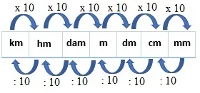

Nesse programa irei fazer um conversor de medidas.
O programa irá pedir por um valor em metros e então dar a opção de escolher para qual medida esse valor será
convertido. As opções:
- Milimetro(mm)
- Centímetro(cm)
- Decímetro(dm)
- Decâmetro(dam)
- Hectometro(hm)
- Quilômetro(km)
O programa deve então converter a medida de acordo com a opção escolhida e exibir o resultado.
O programa tamtém deve exibir uma mensagem de "Opção inválida"caso o usuário insira uma opção diferente das
disponíveis.
